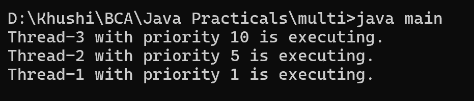

10. Create the program to create multiple threads, set its name and its priority.
class main {
public static void main(String[] args) throws InterruptedException {
Thread thread1 = new Thread() {
public void run() {
System.out.println(Thread.currentThread().getName() + " with priority " + Thread.currentThread().getPriority() + " is executing.");
}
};
Thread thread2 = new Thread() {
public void run() {
System.out.println(Thread.currentThread().getName() + " with priority " + Thread.currentThread().getPriority() + " is executing.");
}
};
Thread thread3 = new Thread() {
public void run() {
System.out.println(Thread.currentThread().getName() + " with priority " + Thread.currentThread().getPriority() + " is executing.");
}
};
thread1.setName("Thread-1");
thread2.setName("Thread-2");
thread3.setName("Thread-3");
thread1.setPriority(Thread.MIN_PRIORITY); // 1
thread2.setPriority(Thread.NORM_PRIORITY); // 5
thread3.setPriority(Thread.MAX_PRIORITY); // 10
thread1.start();
thread2.start();
thread3.start();
thread1.join();
thread2.join();
thread3.join();
}
}
